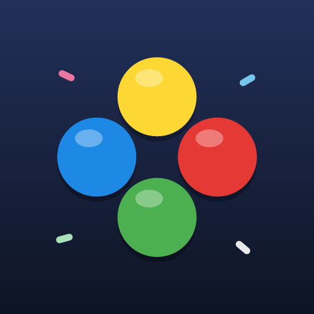
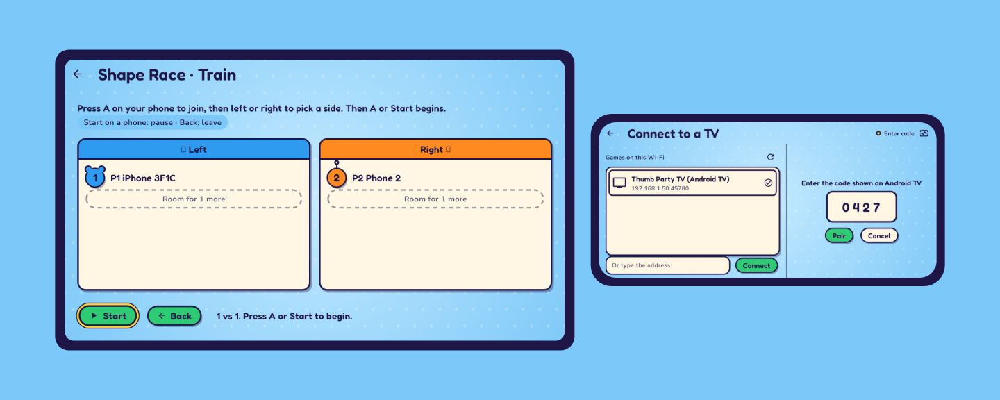
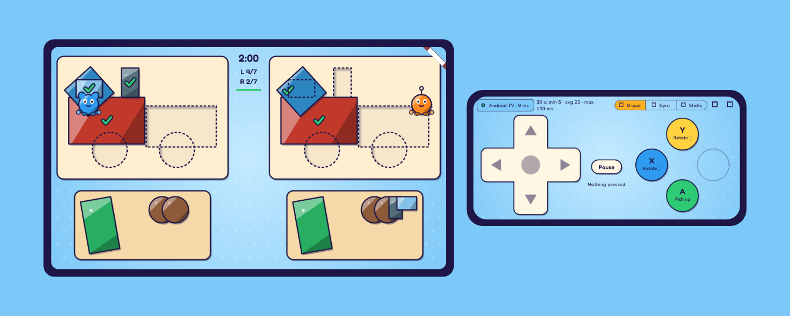
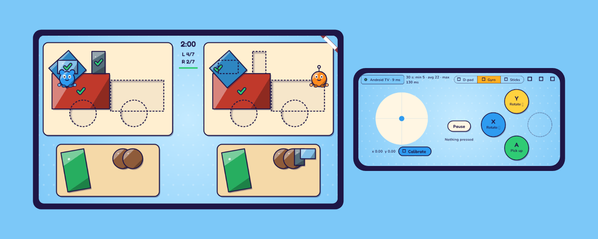
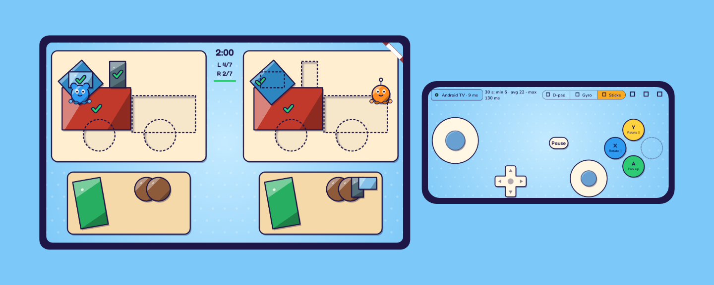
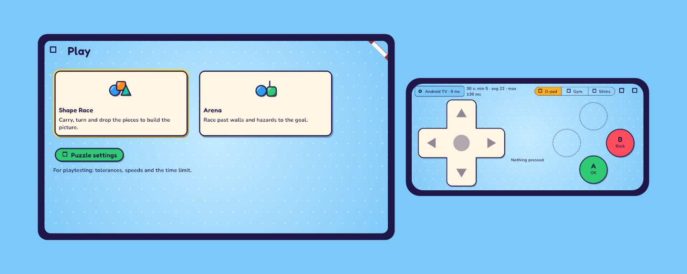
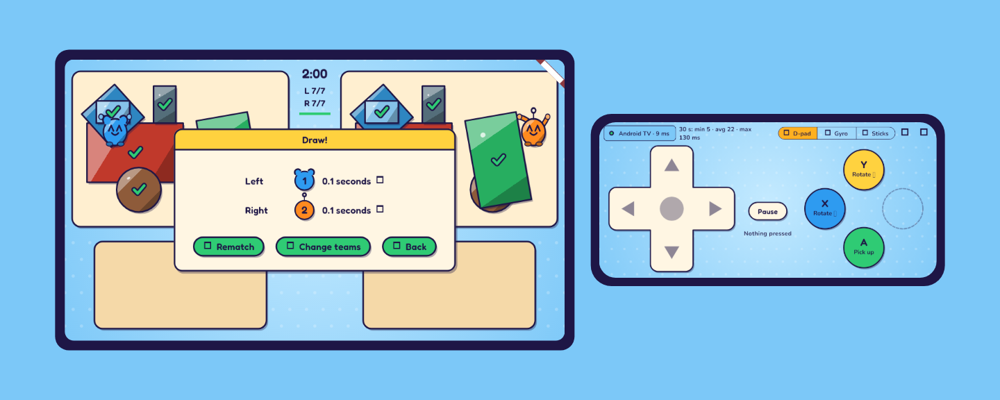

Thumb Party
About this project
Thumb Party turns the phones already in the room into game controllers for one shared screen. I'm a Product Manager: I wrote the product requirements and built the apps with Claude Code. The key design goal is zero-setup living-room play: open the app, type a four-digit code, and you're in, with no game pads, accounts or TV remote. A phone's press reaches the TV in about 6 ms on home Wi-Fi, against a 50 ms target.
Thumb Party is a party game for the family room. Everyone plays on one big screen, and each player's phone is their controller: no game pads, no TV remote and no sign-in.
- Two games: Shape Race, where two sides race to build a picture from shapes (twelve puzzles, Easy and Medium), and the Arena, where you roll a marble past walls and hazards to the goal.
- Your phone, your way: play with a D-pad, by tilting the phone, or with two sticks, and move through the TV's menus from the phone too.
- Up to four players in Shape Race, solo, as a team or side against side.
- Plays anywhere: on an Android TV, Google TV or Windows PC, or with no TV at all, with a phone or tablet as the host.
This page shows what the test version looks like, how to install it, how to join, and how to tell us how it went. The pictures are of 0.13.0 (build 345).






- A phone or tablet for each player: iPhone or iPad with iOS 26 or later, or Android 12 or later.
- One screen to play on: an Android TV or Google TV, or a Windows PC. With no TV, a phone or tablet can host the game (see step 4).
- Everything on the same Wi-Fi. Guest networks often block devices from seeing each other.
What's in this build
- Shape Race: each side fills in a picture, piece by piece. There are twelve puzzles: six Easy and six Medium (boat, butterfly, car, castle, fish, house, robot, rocket, snowman, sun, train, and a tree with a sun). Easy puzzles show each piece's colour in its outline; the Medium ones only the shape. Pick one, or let the TV pick any puzzle of a level.
- The Arena: a run past walls and hazards to the goal. It needs a paired phone to steer it (or the arrow keys and Space on a Windows PC), and for now one person plays it.
- Music: a tune on the game picker and the join screen, and a round tune that speeds up near the end. It plays on the device that hosts the game, and its volume and Mute are in Look and sound.
- Two looks: Sunny and Night, or Auto to swap them by the time of day.
- Tablets: the whole game fills a tablet's screen, and the sticks are the first layout on a tablet.
- Buzzes: each phone buzzes on presses and when things happen in the game. iPads and some Android tablets have no vibration: their buttons flash instead.
1. Install the controller on each phone or tablet
iPhone and iPad
- Install TestFlight from the App Store.
- On the iPhone or iPad, open the invite link: Join on TestFlight
- Tap Accept, then Install. Thumb Party appears on the home screen.
Android phones and tablets
- Join the testers group with your Google account: Join the testers group
- Open the testing page and tap Become a tester: Test Thumb Party
- Install Thumb Party from Google Play on the phone or tablet. Right after joining, Google Play can take up to an hour to let you install it: if it says Something went wrong, check the Play Store is using the same Google account you joined with, then try again a little later.
2. Install the TV app on the big screen
Android TV or Google TV
- Use the same Google account as the TV. Join the group above if you haven't.
- On a phone or computer, open the TV app's testing page and tap Become a tester: Test Thumb Party TV
- On the TV, open the Play Store, search for Thumb Party TV and install it. It appears with your apps (on Google TV, under Apps).
Windows PC
- Download the latest ThumbPartyTV-windows-….zip from the releases page.
- Right-click the zip, choose Extract All, and open the ThumbPartyTV folder.
- Run ThumbPartyTV.exe. Windows SmartScreen warns about an unrecognised app the first time: click More info, then Run anyway. The test builds aren't signed yet.
- When Windows Firewall asks, tick Private networks and click Allow. Without this, phones can't find the PC.
Missed the firewall prompt? Open Start, search for Allow an app through Windows Firewall, click Change settings, and tick Private next to ThumbPartyTV.
3. Connect and play
- Open Thumb Party TV on the TV or PC. It shows a Pairing code of four digits.
- Open Thumb Party on the phone. The TV appears under Games on this Wi-Fi (a TV, a PC, or a phone or tablet that hosts). Tap it.
- Type the code. The phone remembers the TV, so next time it reconnects by itself. Each player does the same on their own phone.
- Pick a layout at the top of the phone: D-pad, Gyro (tilt the phone to steer) or Sticks. Everyone can pick their own.
- On the TV, open Play and pick Shape Race or Arena.
- In a Shape Race, pick a level and a puzzle (or any puzzle of a level). On the join screen each player presses A on their phone to join and left or right to pick a side; A or Start begins.
No TV remote? The phones work the TV's menus: the D-pad or the left stick moves, A presses the button and B goes back. The phone's buttons say what they do on each screen, like OK and Back on the game picker.
No TV nearby? On the phone's connect screen, tap Try without a TV to check the controls work, or Host a game to play without a TV at all (step 4).
4. No TV? Host on a phone
A phone or tablet can be the host. It runs the game, and the other phones join it on the same Wi-Fi.
- On the Connect screen, tap Host a game.
- Pick one:
- Play on this phone: every phone shows the game with the buttons on top. In a Shape Race, each player sees their own side (on a tablet, the whole match).
- Show on this device: the host device (an iPad works well) shows the whole game, and everyone else uses their phone as a controller.
- Ask the others to open Thumb Party and tap the host in their list. It shows as a Phone or a Tablet. They can also type the code the host shows.
- Then it's the same as on a TV: open Play on the host's screen, and the other phones press A to join.
Locking the host phone pauses the round for up to 30 seconds. The other phones say Waiting for the host to come back and count down; unlock in time and the game goes on. If the host stays locked for longer, the round ends and the other phones say why.
In a round, the game's sounds play on every phone, so turn the volume up on all of them.
Settings
On the phone, the gear at the top of the controller opens Settings:
- Look and sound: the look (Auto, Sunny or Night), the moving background and bounces (Effects), the music's volume and Mute. A hosting phone plays the music, so this is where you turn it down.
- Haptics: the tick on every press, and how strong each thing in the game feels. Try plays one.
- Gyro and Sticks: how far you tilt or push, and how much the phone ignores small movements.
- Game on this phone: how much you can see the buttons when a game is behind them, and a frame rate setting for older phones.
- Control stats: the switch for the anonymous numbers about the controls. They are sent only if an adult allows it on the TV.
- About: the version, the privacy policy and this guide.
Defaults at the top of Settings puts them all back.
On the TV, Look and sound has the same look and sound settings. The buttons beside it are test screens for the buzzes, the delay, the look and the stats: leave them alone unless we ask you to try something.
If something doesn't work
- The TV doesn't show up on the phone: check both are on the same Wi-Fi (not a guest network). You can also type the address shown on the TV under Address for manual entry.
- iPhone or iPad: allow Local Network access when asked, or later in Settings → Thumb Party.
- Windows: allow the app through the firewall for private networks (see above), and make sure Windows treats your Wi-Fi as a private network.
- The connection drops: it reconnects by itself. If it keeps dropping, move closer to the Wi-Fi router.
- The tilt does nothing: not every phone has the motion sensor that Gyro needs. Pick D-pad or Sticks on that phone instead.
Tell us how it went
Email manveerwasson@gmail.com. Please say which version you have: on the phone it's in Settings → About, and on the TV it's under the pairing code on the home screen.
For a problem, open Diagnostics on the phone: tap the heart-with-a-pulse button at the top of the connect screen, or at the top of the controller. Copy report copies the details, and Share log (the share icon) puts them in a message you can send. Say what you did, what happened, and which game it was in.
iPhone testers can also send feedback from TestFlight: take a screenshot and tap Share Beta Feedback.
What we collect, and why, is in the privacy policy.